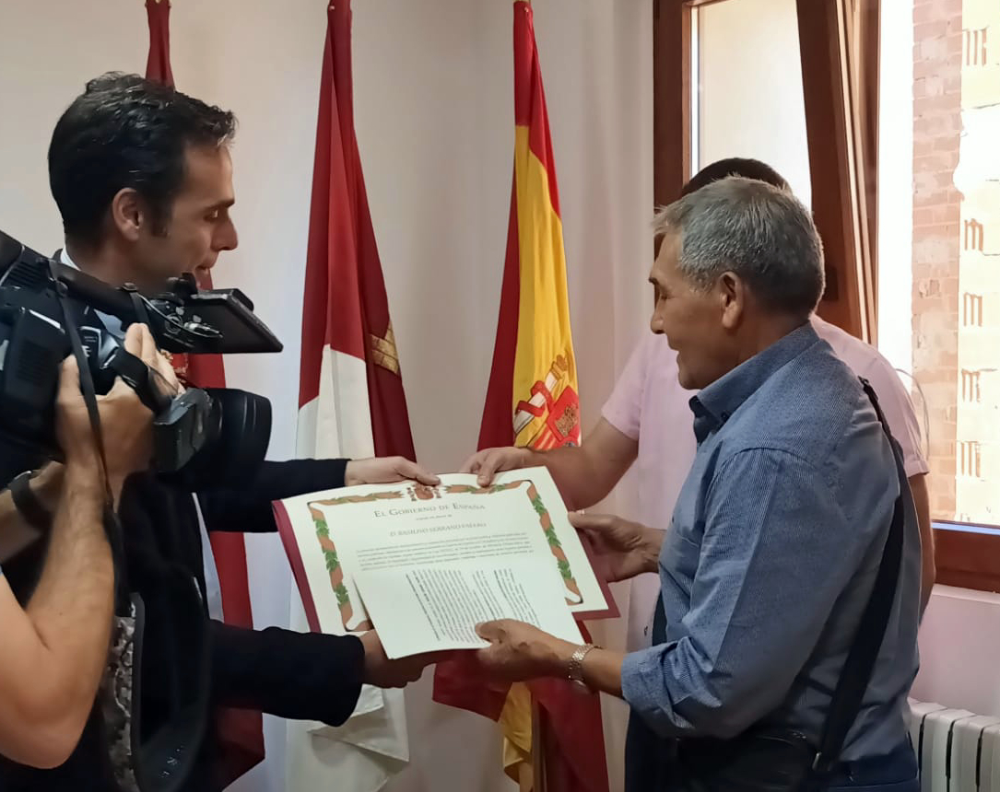

"El Manco de La Pesquera”: la historia de un Guerrillero Antifranquista es un apasionante libro que nos sumerge en la vida y lucha de Basiliso Serrano Valero, un héroe olvidado de la provincia de Cuenca en el siglo XX. A través de 289 páginas, este relato cautivador nos muestra cómo un hombre común se convierte en un símbolo de resistencia contra la opresión franquista. Los autores nos brindan una visión única de la historia a través de más de 30 entrevistas recopiladas en 18 años de investigación, así como el análisis de más de 170 sumarios judiciales. A medida que descubrimos la valentía y determinación de Basiliso Serrano, comprendemos la importancia de mantener vivos los valores que nos identifican y nos permiten perseverar en la lucha por la libertad y democracia. "El Manco de La Pesquera" es una ventana hacia un pasado no tan lejano pero a menudo olvidado, recordándonos que los mitos y héroes de nuestra historia merecen un lugar destacado en nuestra memoria colectiva. Esta obra nos inspira a reflexionar sobre nuestra propia lucha por la justicia y libertad, y nos muestra la trascendencia de aquellos que desafiaron al régimen de Franco en nombre de un futuro mejor. Es una lectura imprescindible para aquellos que buscan entender y valorar la historia y coraje de aquellos que defendieron sus convicciones con pasión y sacrificio.
Comienzo del libro:
"Los ríos han marcado el pulso de la vida, no sólo son sus venas, sino también componen una musculatura de erosión, clima y tiempo. Humana y geológica, geográfica e histórica."
El Gobierno de España ha anulado la sentencia de muerte de Basiliso Serrano Valero, conocido como "El Manco de La Pesquera", que fue dictada en 1955 por un tribunal militar en Valencia.
La declaración fue firmada por el Ministro de la Presidencia, Félix Bolaños, el 29 de septiembre y fue entregada a un familiar de Serrano Valero el 1 de octubre de 2023 en Santa Cruz de Moya por Diego Blázquez Martín - Director General de Memoria Democrática, en presencia de la Subdelegada del Gobierno en Cuenca y otras autoridades.
La declaración reconoce a Basiliso como víctima de la Guerra Civil y la Dictadura franquista. La declaración de reparación y reconocimiento personal es un documento expedido por el Ministerio de la Presidencia, Relaciones con las Cortes y Memoria Democrática en el que se reconoce a una persona como víctima de la Guerra Civil y la Dictadura franquista. Este documento conlleva el reconocimiento y la reparación moral para aquellas personas que sufrieron las consecuencias de la Guerra Civil y la Dictadura, y para sus familiares.
La anulación de la sentencia de muerte de Basiliso Serrano Valero es un reconocimiento a una víctima de la represión franquista. El Manco de La Pesquera fue una víctima de la injusticia y los agravios derivados de la Guerra Civil y la Dictadura franquista. La declaración de reparación y reconocimiento personal es un paso importante para que las víctimas de la Guerra Civil y la Dictadura franquista reciban el reconocimiento y la reparación que merecen.

En el programa Variotinto
El Manco en Castilla-La Mancha TV
Reportaje de Basiliso hablando de su libro y su ruta
10 de diciembre de 2020
15 aniversario de la vuelta de Basiliso a La Pesquera
El inexorable paso del tiempo nos recuerda la esperada llegada a Basiliso a su pueblo, La Pesquera. Habían pasado 50 años desde que encontró su final frente a un pelotón de fusilamiento en el paredón de Paterna.
La provincia de Cuenca, en los años de la guerra civil, fue zona republicana. Territorio de retaguardia, tránsito entre Madrid y Valencia, espacio de reorganización de unidades, acogida de refugiados, intendencia, hospital y tribunales.